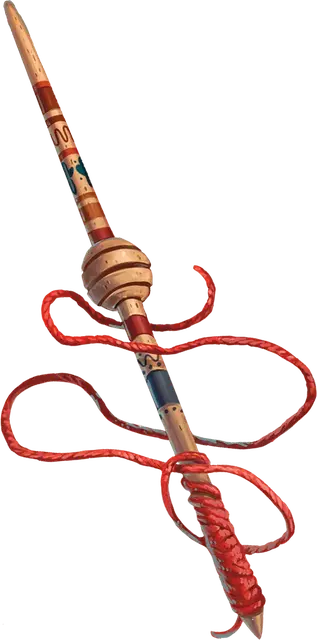

Веретено судьбы
Spindle of Fate
Волшебная палочка, легендарная (требуется настройка)

Рекомендованная стоимость от 50 001 зм
Эта волшебная палочка имеет форму веретена, обмотанного красной нитью. Волшебная палочка имеет 6 зарядов, которые можно использовать для следующих свойств:
- Предвидение битвы. Когда вы совершаете бросок инициативы, вы можете израсходовать 1 заряд, чтобы добавить или вычесть свой бонус мастерства из общего результата.
- Предсказанный конец. Действием вы можете израсходовать 2 заряда, чтобы нацелиться на существо в пределах 30 футов и призвать погибель на это существо. Пока цель находится на том же плане существования, что и вы, вы можете определить направление к ее местоположению, и вы знаете направление её движения, если она находится в движении. Кроме того, один раз в ход, когда вы наносите урон обреченному существу, вы можете бросить 1к6 и добавить выпавшее значение к броску урона. Этот эффект действует в течение 1 часа или до тех пор, пока вы не нацелитесь этим эффектом на другое существо.
- Поворот судьбы. Когда существо в пределах 60 футов от вас совершает спасбросок или бросок атаки, вы можете реакцией израсходовать 3 заряда и изменить результат, превратив проваленный спасбросок в успешный, промах броском атаки в попадание или наоборот.
Волшебная палочка восстанавливает 1к6 израсходованных зарядов ежедневно на рассвете.